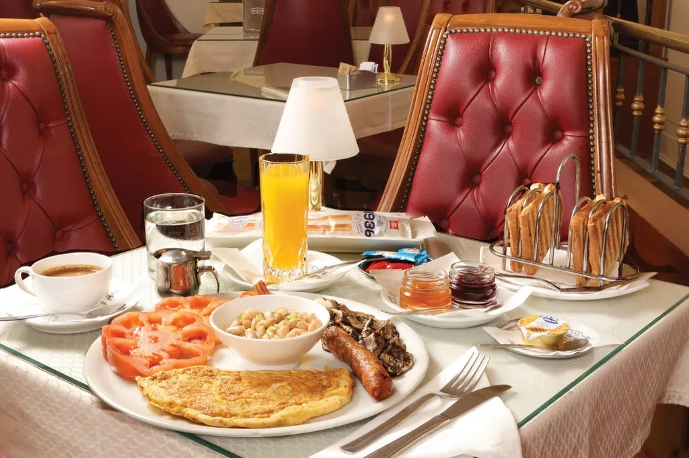

Coffee
At our counter coffee is served the traditional way: a short, creamy espresso in a warm cup. Alongside it are the house coffees created at Ceraldi:
- Caffè Ceraldi: hot chocolate at the bottom, coffee cream and fresh whipped cream. Our signature.
- Caffè Babà: coffee cream, babà cream, a mini babà and whipped cream.
- Michelino: espresso, whipped sugar cream and cream warmed in a bain-marie.
- Nocciolato and Pistacchiotto: espresso with Piedmont PGI hazelnut cream or pistachio cream.
- Caldo freddo, Brasiliano, Veneziano, Viennese and caffè leccese with almond syrup.
If you prefer something else: hot chocolate, Dammann teas and herbal infusions, chai and golden milk, juices and freshly squeezed orange juice.
Italian breakfast
A warm cornetto with a cappuccino, at the counter or at a table. Our croissants come plain or filled (custard, custard and black cherry, chocolate, apricot, raspberry, apple and cinnamon, lemon), also wholemeal and vegan, plus the croissant ischitano, with a double layer of puff pastry and brioche dough. Then brioche, kranz, pain au chocolat, maritozzo filled with cream and the nuvoletta with milk cream.
Neapolitan breakfast
In Naples breakfast has its own pastries: a freshly baked sfogliatella, riccia or frolla; the graffa, a fried sugared doughnut; and babà for those who like a bold start to the day.
Full English breakfast, every morning
For guests who don't want to give up their habits, we serve a full English breakfast every morning, made the traditional way: eggs, bacon, sausages, beans, mushrooms and tomatoes, toast and, of course, tea. Or try a plain or filled omelette, or scrambled eggs.
